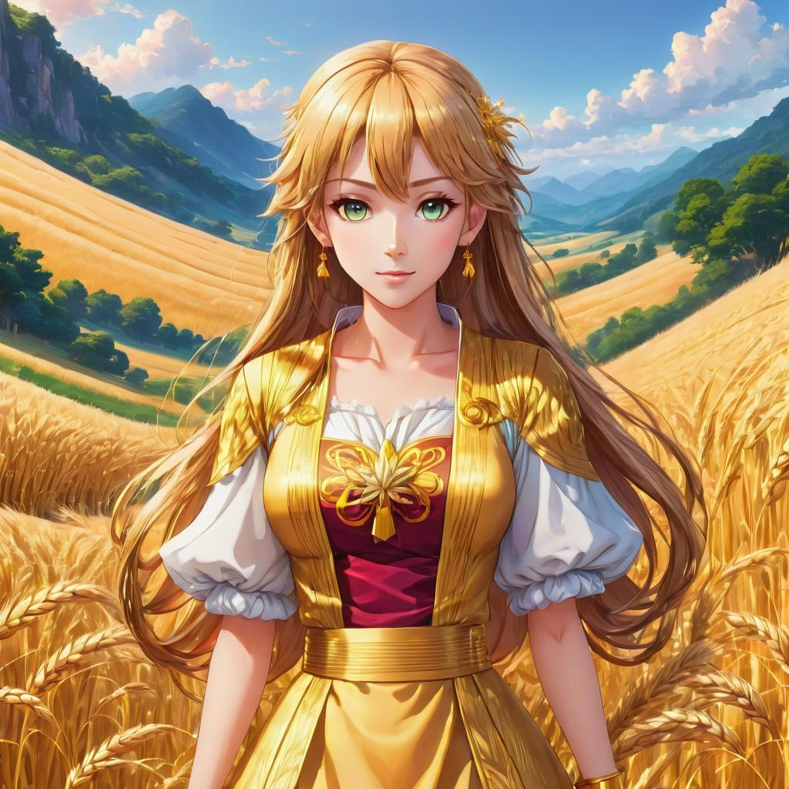
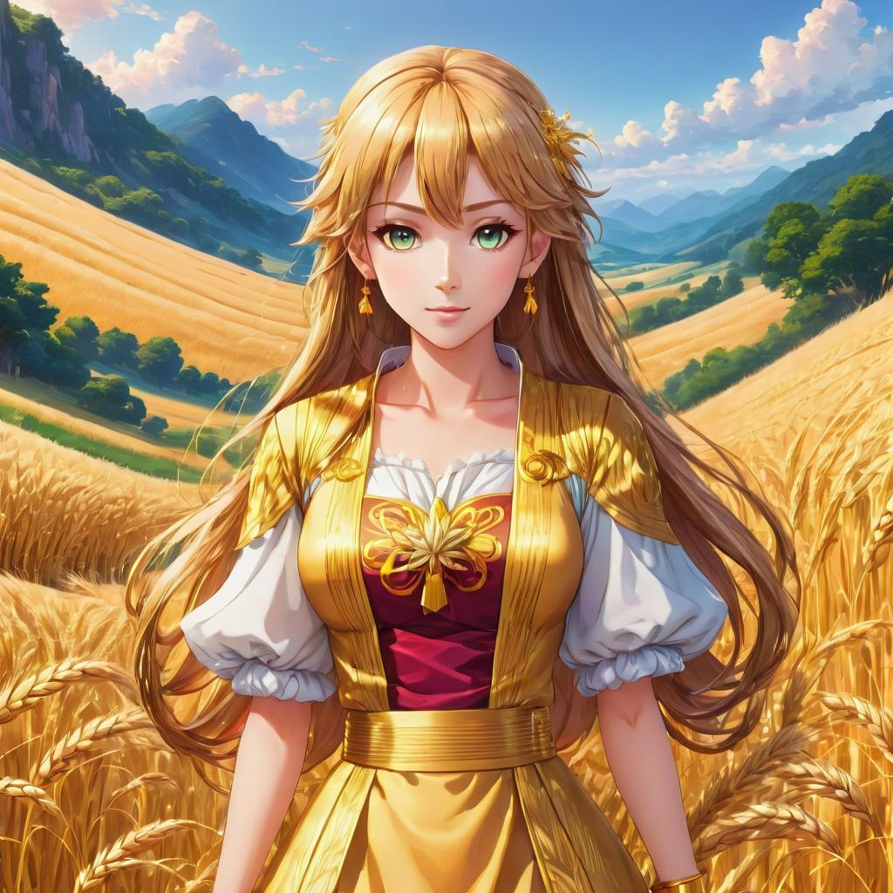

FREYR

In the illustrious pantheon of Norse deities, Freyr emerges as a figure of benevolent power and abundance, embodying the essential virtues of fertility, prosperity, and peace. Revered as the god of harvest and fertility, he holds sway over the bountiful gifts of the earth, ensuring the fecundity of crops and the prosperity of mortal settlements throughout the Nine Realms. Through his mythic narrative and divine attributes, Freyr epitomizes the eternal cycle of growth, abundance, and renewal, inspiring reverence and gratitude among gods and mortals alike. Born of the divine lineage of the Vanir, Freyr is the son of the sea god Njord and the earth goddess Nerthus, inheriting his father's affinity for the natural world and his mother's nurturing spirit. As the twin brother of the fertility goddess Freyja, he embodies the sacred union of masculine and feminine energies, symbolizing the harmonious balance between the forces of creation and destruction. Together with his sister, Freyr oversees the cycles of planting and harvest, bestowing his blessings upon the land and ensuring the prosperity of all who dwell within his domain.
Central to Freyr's mythology is his role as the guardian of prosperity and peace, tasked with maintaining harmony and abundance throughout the Nine Realms. With his magical sword, forged by the legendary dwarven smiths, Freyr stands as a vigilant protector against the forces of chaos and discord, wielding his blade with grace and skill in defense of the natural order. Through his benevolent influence, fields yield rich harvests, orchards burst forth with ripe fruit, and livestock thrive in abundance, enriching the lives of gods and mortals alike with the fruits of his divine bounty. Moreover, Freyr's association with peace and diplomacy further underscores his role as a benevolent guardian of the cosmos. As a cherished member of the divine council of Asgard, he serves as a mediator and peacemaker in times of conflict, seeking to resolve disputes through dialogue and compromise rather than violence and bloodshed. His gentle demeanor and compassionate nature endear him to both friend and foe alike, fostering a sense of unity and cooperation among the disparate factions of the divine realm.
Despite his prominent position within Norse mythology, Freyr's character is often overshadowed by the exploits of his more illustrious counterparts, such as Odin, Thor, and Loki. Nevertheless, his quiet strength and steadfast devotion to his principles serve as a testament to his enduring significance within the pantheon of Asgard, reminding us of the vital role played by gods of peace and prosperity in shaping the destiny of the cosmos. Through his myths and legends, Freyr invites us to cultivate reverence for the natural world and gratitude for its abundant gifts, fostering harmony and balance in our own lives and communities. In conclusion, Freyr stands as a luminous figure within the realm of Norse mythology, embodying the timeless ideals of fertility, prosperity, and peace. As the benevolent god of harvest and abundance, he bestows his blessings upon the earth, enriching the lives of gods and mortals alike with his boundless grace and generosity. Through his myths and legends, Freyr inspires us to cultivate harmony with the natural world, nurturing the seeds of compassion, love, and renewal that lie within us all.

 
